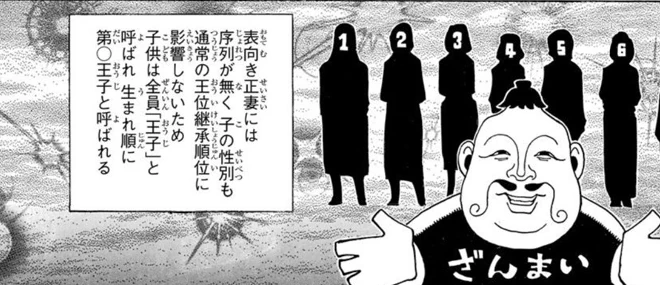
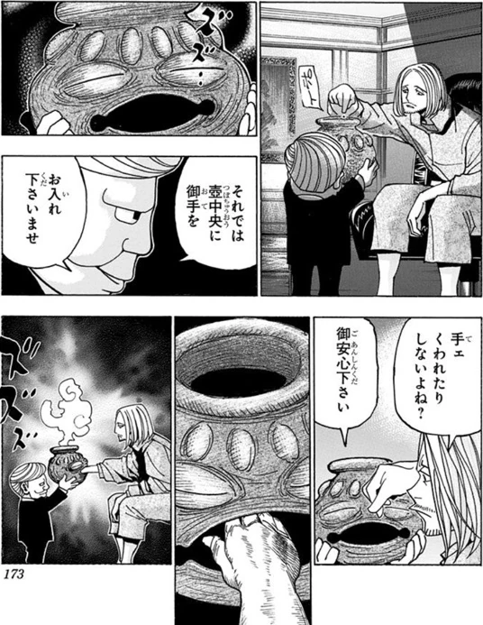

継承戦の前提
- カキン国王ナスビーの後継を、14人の王子の間で争う。
- 壺中卵の儀を経て、ブラックホエール号で継承戦が進行する。
- 王族への表立った殺害には法的な制約があり、護衛や司法の動きも継承戦に関わる。
カキン王位継承戦の人物、出来事、作中の基礎資料を確認
人物や出来事の「詳細」を開いて気付いたことを書いてください。メモは自動でPCに保存します。あとでCodexに「修正メモを見て」と伝えるだけで大丈夫です。
所属・任務を先に表示し、血縁や任務先の変化、死亡・殺害の情報は各人物の「ネタバレ＋」で開けます。手紙や描写による親子説は未確定情報として区別します。
作中の出来事を時系列・話数別に確認できます。第420話までのネタバレを含みます。
「全部」で全日程を通して確認できます。人物・場所・大まかなイベント種類を組み合わせて絞り込めます。
同じ話に登録された出来事をまとめて確認できます。人物・場所・種類でも絞り込めます。
作中でまだ判明していない問いを、関連する出来事と話数で整理しています。
作中の設定と数値
船の構造、参加者の状況、儀式や警護の仕組みを整理しています。
王子・王妃は人物台帳、船内の階層は出来事の場所記録に基づく開始時の情報です。現在の状況は下で分けて表示します。

各層と作中で確認できる主な場所を、縮尺を持たない模式図にしました。
参照：第359〜360話（王子居住区）、第378〜380話（下層の勢力・施設）。同じ層にある場所同士の位置関係は示していません。
出航時は14人。以下の最新状態は死亡・身元などのネタバレを含みます。
人数は人物台帳の状態表記から集計します。肉体と人格の状態が異なる場合や身元が未確定の場合は、単純な生存人数として扱いません。船全体の乗船人数は根拠を確認できていないため掲載していません。
王子が壺に血を捧げ、現れた卵を飲む儀式。守護霊獣は王子のオーラを糧とし、本人には見えず、本人の意思で自由には操れません。守護霊獣同士は殺し合わず、憑いた人間を直接攻撃しないという共通原則があります。
守護霊獣と王子本人の念能力は別です。個々の守護霊獣の姿や能力は各王子の人物情報にまとめています。


参照：第349話（儀式・参加条件）、第360〜361話（守護霊獣と継承戦の制約）。例外や未解明の条件は確定事項として加えていません。
| 立場 | 作中での位置づけ |
|---|---|
| 王子・王妃 | 継承候補とその母。王子ごとに居室と陣営がある。 |
| 王室警備兵 | 国王軍側の警護人員。王子の居室へ配置される。 |
| 王妃所属兵・私設兵 | 所属する王妃や王子と、実際の配置先が異なる場合もある。 |
| ハンター | 護衛や調査など、それぞれの任務で乗船する。 |
| 司法省 | 船内の事件捜査や法的手続きに関わる。 |
| 三大マフィア | 下層で活動する別々の組織。王子陣営との関係もそれぞれ異なる。 |
所属、配置、共闘は別の関係として扱います。組織の行動や人数は、関連する人物・出来事の記録で確認できます。